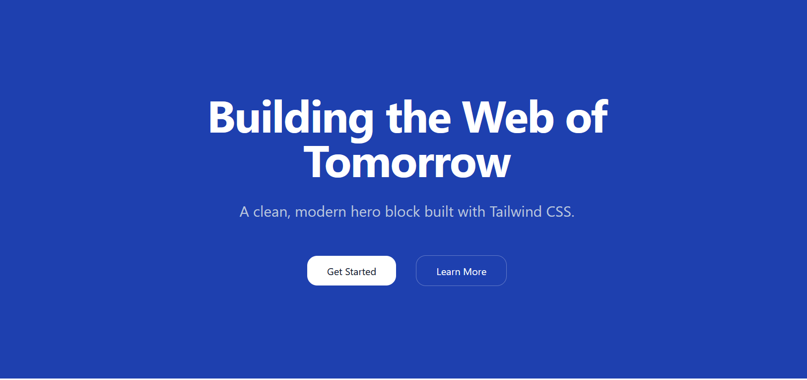
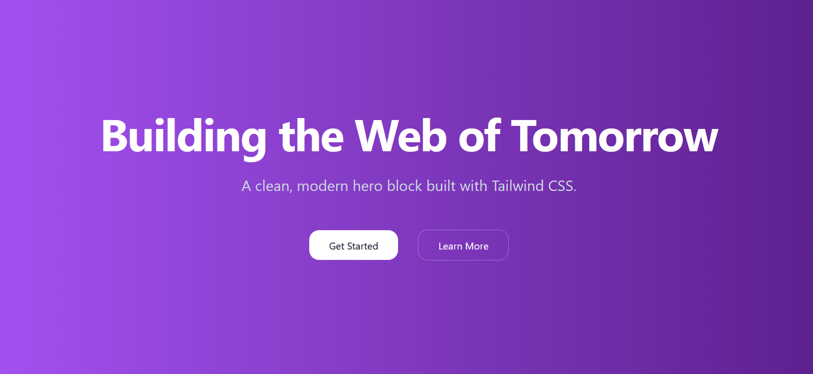

Learning Goals
At the end of this Tutorial, you will be able to:
- Explain the difference between hosted (CDN) Tailwind and a local build pipeline.
- Add Tailwind to any HTML page with a single <script> and use utility classes safely.
- Configure Tailwind in the browser for colours, fonts, and spacing scales.
- Build a responsive hero and card grid with dark mode support.
About TailwindCSS
TailwindCSS is a utility-first CSS framework. Instead of writing your own stylesheet file such as mystyle.css, you import utility classes directly in your HTML from the pre-built TailwindCSS stylesheet.
You get consistency, speed, and responsive/dark mode variants out of the box.
You can use TailwindCSS in either of two ways:
- Hosted (CDN): Add <script src="https://cdn.tailwindcss.com"> to your page; Tailwind is available immediately. Great for learning, prototypes, and simple static pages.
- Build pipeline (Node/PostCSS): Scans your UI elements, tree-shakes unused classes, supports plugins, and produces tiny production CSS. Best for large projects.
In this Tutorial, we will use the hosted (CDN) approach to get productive instantly — no tooling required.
Creating a workfile
Begin by creating a sample HTML file to expermiment with:
- If a folder named tw does not exist in your exercises folder, create it now.
- In VS Code, create a new text file.

- Save your new file as tw-hero-solid.html.
- In this file, copy-and-paste the following code, and save your file.
<!DOCTYPE html>
<html lang="en">
<head>
<meta charset="UTF-8">
<meta name="viewport" content="width=device-width, initial-scale=1.0">
<title>TW Header with Solid Background Colour</title>
<!-- TailwindCSS via CDN -->
<script src="https://cdn.tailwindcss.com"></script>
</head>
<body>
</body>
</html>
About the <header> container
In a web page, the <header> tag is generally positioned under the <nav> element at the top of a web page.

It usually contains the <h1> heading, the <h2> sub-heading and one or two buttons.
Visual designers refer to this part of a web page as the hero block.
Case 1: A solid background colour
This is the simplest possible case. The background consists only of one solid (unchanging) colour.
In your workfile, copy-and-paste the output of the following AI prompt:
Create a responsive hero section using only the <header> element with TailwindCSS classes.
No full HTML document needed.
**Content:**
- Main heading: "Building the Web of Tomorrow"
- Subheading: "A clean, modern hero block built with Tailwind CSS."
- Two CTA buttons: "Get Started" (primary) and "Learn More" (secondary)
**Colours:**
- **Background:** 'bg-blue-800'
- **Text:** h1 'text-white' and h2 'text-slate-300'
- **Primary button:** 'bg-white' with 'text-slate-900', hover state 'hover:bg-slate-100'
- **Secondary button:** 'text-white' with 'border-white/30' border, hover state 'hover:bg-white/10'
**Responsive behavior:**
- Minimum heights: 48vh (mobile), 32vh (sm), 60vh (md), 88vh (lg)
- Text scales from 4xl to 7xl across breakpoints
- Set max-width for headings and buttons to max-w-6xl
- Buttons stack vertically on mobile, horizontal on larger screens
- Include hover transitions on buttons
- Use centered layout, rounded-2xl buttons, and appropriate spacing
When you save your file, your hero block should look like that below in a web browser.
Experiment with different colours in your tw-hero.htmlworkfile.
Case 2: A linear gradient background colour
In the first sample web page above you have applied what is called solid background colours to the <header> block.
CSS also enables you to apply a linear gradient to a <header> block and other web page elements.
Linear-gradients are of two main types:
- Gradients of the same colour. For example, from a light blue to a dark blue.
- Gradients of different colours. For example, from blue to green.
Below is the TailwindCSS gradient syntax.
| bg-gradient-to-{direction} to-r to-b to-br |
Sets gradient direction left to right top to bottom top-left to bottom-right |
| from-{color} | Starting color |
| via-{color} | Middle color (optional) |
| to-{color} | Ending color |
Here are some sample gradients that would work well:
| bg-to-br from-blue-600 to-blue-900 |
| bg-to-r from-blue-700 via-purple-700 to-indigo-800 |
| bg-to-b from-blue-600 to-cyan-700 |
Let's build an example with the following steps;
- In VS Code, create a new text file and save it as tw-hero-gradient.html.
- In this file, copy-and-paste the following code, and save your file.
<!DOCTYPE html>
<html lang="en">
<head>
<meta charset="UTF-8">
<meta name="viewport" content="width=device-width, initial-scale=1.0">
<title>TW Header with Linear Gradient Background Colour</title>
<!-- TailwindCSS via CDN -->
<script src="https://cdn.tailwindcss.com"></script>
</head>
<body>
</body>
</html>
Next, in your new tw-hero-gradient.html workfile, copy-and-paste the output of the following AI prompt:
Create a responsive hero section using only the <header> element with TailwindCSS classes.
No full HTML document needed.
**Content:**
- Main heading: "Building the Web of Tomorrow"
- Subheading: "A clean, modern hero block built with Tailwind CSS."
- Two CTA buttons: "Get Started" (primary) and "Learn More" (secondary)
**Colours:**
- **Background Linear Gradient:** 'bg-to-r from-purple-500 to-purple-900'
- **Text:** h1 'text-white' and h2 'text-slate-300'
- **Primary button:** 'bg-white' with 'text-slate-900', hover state 'hover:bg-slate-100'
- **Secondary button:** 'text-white' with 'border-white/30' border, hover state 'hover:bg-white/10'
**Responsive behavior:**
- Minimum heights: 48vh (mobile), 32vh (sm), 60vh (md), 88vh (lg)
- Text scales from 4xl to 7xl across breakpoints
- Set max-width for headings and buttons to max-w-6xl
- Buttons stack vertically on mobile, horizontal on larger screens
- Include hover transitions on buttons
- Use centered layout, rounded-2xl buttons, and appropriate spacing
When you save your file, your hero block should look like that below in a web browser.
Case 3: A background image with tinted overlay
Now let's use TailwindCSS to create a hero block with a background image and a tinted overlay.
- In VS Code, create a new text file and save it as tw-hero-bg-image.html.
- In this file, copy-and-paste the following code, and save your file.
<!DOCTYPE html>
<html lang="en">
<head>
<meta charset="UTF-8">
<meta name="viewport" content="width=device-width, initial-scale=1.0">
<title>TW Header with Background Image and Tinted Overlay</title>
<!-- TailwindCSS via CDN -->
<script src="https://cdn.tailwindcss.com"></script>
</head>
<body>
</body>
</html>
Next, in your new tw-hero-bg-image.html workfile, copy-and-paste the output of the following AI prompt:
Create a fully responsive hero section using only a <header> element styled entirely with TailwindCSS classes.
** Structure & Layering **
- Use layered absolute positioning inside a relative <header>:
- Background image layer (z-0): full-cover background (object-cover)
- Tinted overlay layer (z-10): bg-black/30 covering entire header
Text + buttons layer (z-20): centered content on top
** Layout Requirements **
Outer <header> must use:
- relative positioning
- flexbox centering: flex items-center justify-center
- responsive height:
min-h-[48vh] (mobile)
sm:min-h-[32vh]
md:min-h-[60vh]
lg:min-h-[88vh]
- responsive horizontal padding: px-4 sm:px-6 lg:px-8
** Text Content **
Include:
- Main heading <h1>
- Responsive font sizes: text-4xl sm:text-5xl md:text-6xl lg:text-7xl
- Bold, white text with text-shadow
- Sub-heading <h2>
- Slightly larger sizes: text-lg sm:text-xl md:text-2xl
- Centered, with text-shadow
- Spacing: mb-12
** Buttons **
Below the text, include two buttons:
- Get started
- Learn more
Button requirements:
- Stack vertically on mobile (flex-col), horizontally on larger screens (sm:flex-row)
- Space between buttons: gap-4 sm:gap-5
- Buttons should be content width on mobile
- Use: self-center sm:self-auto
- Buttons should include:
Rounded corners: rounded-2xl
Padding: px-7 py-3
Hover transitions: scale up, shadow increase
First button: bg-indigo-500 → hover bg-indigo-400
Second button: translucent: bg-white/10 with hover:bg-white/20 and a subtle white ring
** Overall Design Requirements **
- All text should be white with subtle text-shadow for readability.
- Use a full-cover background image layered behind a black/30 overlay.
- Wrap text & buttons in a centered container: max-w-6xl mx-auto.
** Final Output **
- Produce a complete <header> element containing:
- Full layering
- Responsive typography
- Mobile-friendly button behavior
All TailwindCSS classes applied directly in markup
No additional containers outside the <header>When you save your file, your hero block should look like that below in a web browser.
Case 4: A background video, poster image and tinted overlay
For each prompt, copy the output HTML into a new file in your 📁 exercises folder, save, and open in your browser.
Create a responsive hero section with a background video and gradient overlay using only the <header> element with TailwindCSS classes.
Structure (using layered positioning):
Outer container: relative positioning with flexbox centering
Three layers (using z-index):
Text content (z-index: 20) - main content on top
Gradient overlay (z-index: 10) - colored transparent layer
Background video (z-index: 0) - full-cover video at bottom
Content:
Main heading: "Education for Life"
Subheading: "A brighter career and future"
Video setup:
Video file: assets/videos/hero-video.mp4
Poster image: assets/videos/hero-still.jpg
Video attributes: loop, playsinline, muted, autoplay, disablepictureinpicture, preload="auto"
Use object-cover to fill the container
Colors:
Background video: Full-cover video using object-cover
Gradient overlay: linear-gradient(rgba(29,38,113,0.7),rgba(195,55,100,0.3)) - blue to pink gradient with transparency
Fallback background: bg-gray-500
Text: text-white with text-shadow: 2px 2px #222 for readability
Layout:
Use relative on outer header with overflow-hidden
Use absolute inset-0 on both the video container and overlay to fill the entire header
Text container has relative positioning with higher z-index to appear on top
Center text both vertically and horizontally
Minimum height: 500px (mobile), 80vh (desktop)
Responsive behavior:
Height: min-h-[500px] on mobile, md:h-[80vh] on desktop
Horizontal padding: px-[12%] with bottom padding pb-[4%]
Large, bold heading with responsive text sizes (text-5xl → text-7xl → text-8xl)
Uppercase subheading with responsive sizes (text-xl → text-3xl → text-5xl)
Important: Include proper z-index layering (video z-0, overlay z-10, text z-20) and use inline style for the gradient overlay since Tailwind doesn't support custom rgba gradients.